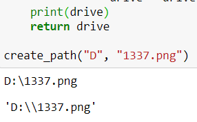

היי,
בתרגיל מבקשים שהפונקציה תחזיר נתיב כאשר המחרוזת מופרדת ע"י “”, כאשר אני רושמת return מתקבלים שני סלשים (\) אך כאשר אני מדפיסה את הפלט מקבל סלש אחד (), כפי שמצורף בתמונה.
מהי הסיבה לכך? האם זה בסדר שמופיעים שני סלשים?

בנוסף, מה הכוונה בהקריאה create_path() תגרום לשגיאה? הודעת שגיאה שאנחנו בוחרים לכתוב או הודעת שגיאה שמגיעה מפייתון?
תודה!
2 לייקים
- זה בסדר. זו התצוגה של פייתון כדי להגיד לך שלא מדובר בתו מיוחד כמו n\. אם היית עושה print זה היה מסתדר
- לא באמת משנה
4 לייקים
תודה רבה!!..
היי,
אם אני רוצה להחזיר ערך ולא להדפיס , איך בכל זאת ניתן לעשות זאת?
כאשר אני משרשרת מחרוזת עם “\” ומחזירה מפונקציה, זה משתבש.
מה הכוונה בזה משתבש? נזרקת הודעת שגיאה או שיש בעיה אחרת?
זה מחזיר את הערך עם סלש כפול כמו בדוגמא למעלה,
יש פונקציות בהן אני לא רוצה להדפיס ערך אלא רק לקבל
אני לא בטוחה שאני מבינה מה הבעיה בזה שזה מחזיר את הערך עם סלש כפול. הסלש הכפול הוא זה שנועד למנוע מזה לעשות בעיות